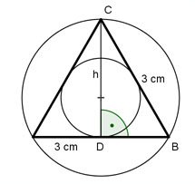

Aufgabe 61 Die Seite eines gleichseitigen Dreiecks ist 3 cm. Wie groß sind der Inkreis- und Umkreisradius?  3 3 32 = h2 + (---)2 |-(---)2 2 2 h2 = 9 - 2,25 h2 = 6,75 |√ h= 2,6 cm 1 1 ri = --- * h = --- * 2,6 cm = 0,87 cm 3 3 2 2 ra = --- * h = --- * 2,6 cm = 1,73 cm 3 3